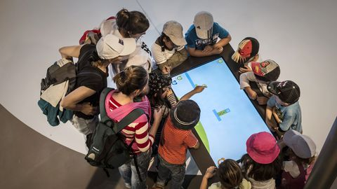

blog

Initiation des petits au codage (programmation).
Pourquoi initier les enfants aux codes (programmation) ??
L’initiation, par ce que les ordinateurs (la technologie) prennent de plus en plus de place dans notre société et il est important que les enfants apprennent à coder comme ils apprennent à écrire ou compter. L’idée de démystifier les codes, prépare leurs intelligences pour donner du sens aux nouvelles technologies.
Comment initier les enfants ??
Pas facile la compréhension des codes même chez les plus grands, ici on fait pas d’algorithme ni des des calculs mathématiques mais on essaie de réaliser l’histoire de enfants avec des logiciels adaptés à leurs ages comme Scratch, Kodable et code karts … etc. Avec ces logiciels l’enfant déplace que de bloc déjà programmer pour animer les héros choisies afin de réaliser leurs histoires. Apprendre aux enfants la programmation demande beaucoup de patience et de réflexion pour les faire comprendre ce qui se passe dans les ordinateurs tablettes qu’ils utilisent chaque jours. Mais très important l’initiation des enfants aux codes car l’enfant capte vite par rapport à un adulte d’ou cela peut permettre de preprarer une génération de programmeurs dans la société. Quelques logiciels pour apprendre les enfants à coder.